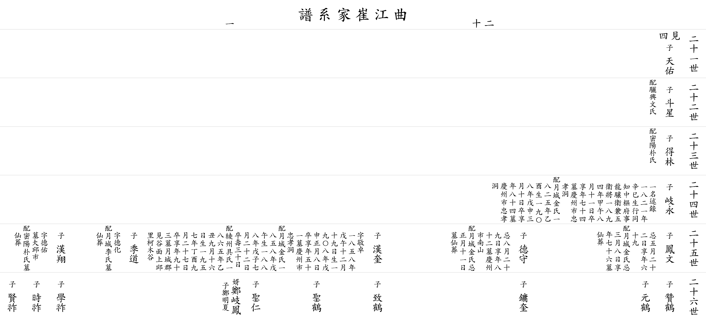

| 곡 강 최 가 계 보 |
| 이전☜ 쪽 20-1 ☞다음 |
| 21세 |
▲ 천우 天佑 |
아버지 ▲준걸(俊傑)의 다섯째 아들 | ||||||||||||||
| 22세 |
두성 斗星 |
할머니 여흥문씨 | ||||||||||||||
| 23세 |
득림 得林 |
할머니 밀양박씨 | ||||||||||||||
| 24세 |
기영 岐永 |
일명 술록(述錄) 1821년(辛巳)생 행(行) 동지중추부사 용양위 겸 오위장 1894년(甲午) 8월 11일 별세 향년 74세 묘 경주시 충효동 할머니 월성김씨 1825년(乙酉)생 1908년(戊申) 3월 10일 별세 향년 84세 묘 경주시 충효동 |
||||||||||||||
| 25세 |
봉문 鳳文 |
제삿날 5월 22일 향년 69세 할머니 월성김씨 제사사날 3월 8일 향년 76세 선장 |
덕수 德守 |
제삿날 8월 29일 향년 82세 묘 경주시 남산 할머니 월성김씨 제삿날 1월 11일 선장 |
한규 漢奎 |
자 경탁(敬卓) 1858년(戊午) 12월 19일생 1908년(戊申) 1월 8일 별세 향년 51세 묘 경주시 충효동 할머니 월성김씨 1858년(戊午)생 1888년(戊子) 7월 22일 별세 수(壽) 31세 할머니 능주구씨 1865년(乙丑) 9월 16일생 1957년(丁酉) 9월 27일 별세 향년 93세 묘 월성군 현곡면 상구리 가목골 사위 정기봉(鄭岐鳳) 외손 명하(明夏) |
계도 季道 |
자 덕화(德化) 할머니 월성이씨 선장 |
한상 漢翔 |
자 덕우(德佑) 묘 대구시 할머니 밀양박씨 선장 |
||||||
| 26세 |
찬학 贊鶴 ▼ |
원학 元鶴 ▼ |
용규 鏞奎 ▼ |
치학 致鶴 ▼ |
성학 聖鶴 ▼ |
성인 聖仁 ▼ |
학조 學祚 ▼ |
시조 時祚 ▼ |
현조 賢祚 ▼ |
|||||||
| 이전☜ 쪽 20-1 ☞다음 |
|  |